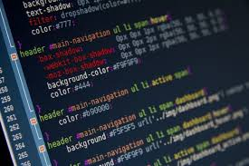
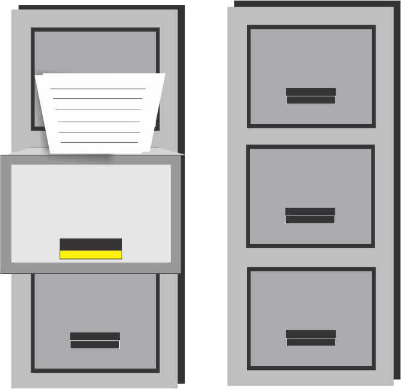

Objetivos do Grupo
"Nós como grupo pretendemos trabalhar em conjunto, desenvolvendo as atividades propostas visando a melhor qualidade possível, além de prezarmos pela questão visual." - Grupo
"Pretendo nessa experiência recordar alguns conceitos que já aprendi no técnico de HTML e CSS, além de aprender novos como Java Script e PHP. Explorar bastante recursos nas atividades propostas pelo professor para ir absorvendo o máximo de conteúdo possível. Por fim, sair um programador web, com capacidade de desenvolver um site completo do zero" - Luis Fernando
"Apesar de já ter estudado sobre HTML. CSS e PHP no curso técnico, acredito que essa disciplina me proporcionará um conhecimento mais avançado sobre essas tecnologias, além de aprender uma linguagem nova: Javascript. Enfim, irei tentar aproveitar ao máximo o que essa disciplina tem a oferecer, visto que desenvolvimento Web é um tópico que está em alta atualmente." - Rodrigo
"Apesar de ter desenvolvido alguns tópicos de desenvolvimento Web durante o meu técnico, as aulas me ajudam a recordar diversos conceitos importantes e alguns conceitos que não acabei vendo também. Espero durante o curso, aumentar os meus conhecimentos em Javascript e Css para facilitar o meu dia-a-dia." - Rogério
"Eu já havia tido uma pequena experiência com Web no curso técnico de Informática, foi uma passada bem básica pelo assunto, e confesso que não gostei muito, pelo contrário, eu odiei principalmente PHP. Mas agora na graduação eu pretendo, deixar esse “trauma” de lado e aprofundar meus conhecimentos."Tiago
Portifólio do Grupo
Ciencia, Tecnologia e Sociedade
Docente Responsável - André Leon
Disciplina que nos propôs a criação de um blog que abordasse temas relacionados a Ciência, Tecnologia e Sociedade.
Leia MaisDisciplina: Programação Orientada a Objetos 2
Docente Responsável - Ivan Luiz Marques Ricarte
Disciplina que nos propôs a desenvolver um Software, na linguagem Java, que contemplace os principais conceitos abordados em aula.
Leia MaisDisciplina: Estrutura de Arquivos
Docente Responsável - Celmar
Disciplina que nos propôs a desenvolver um Software em Java, que fosse capaz de implementar funcionalidades vistas em aulas.
Leia MaisSeminários 1
Docente Responsável - Vladimir
Nesta disciplina fizemos apresentações de tema livre. Rodrigo e Tiago apresentaram sobre Realidade Aumnetada, enquanto Rogério e Luis apresentaram sobre .
Leia MaisSistemas Operacionais
Docente Responsável - André Leon
No final desta disciplina tivemos que elaborar um artigo acadêmico cujo assunto deveria estar entre alguns pré-selecionados pelo professor.
Leia MaisGestão de Projetos

Docente Responsável - Marcos Borges
O projeto principal dessa disciplina consistiu em evar informações para alunos do ensino médio sobre temas relacionados a tecnologia da informação e sobre a Unicamp.
Leia Mais